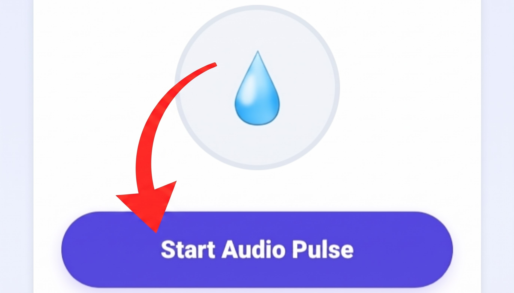

The Physics of Acoustic Water Ejection: Breaking Surface Tension
Dropping your smartphone into a pool, sink, or shower is a common mishap that modern water-resistant (IP67 or IP68 rated) phones survive with ease. However, while internal gaskets prevent moisture from reaching the motherboard, external ports—especially speaker cavities and ear-speaker grilles—remain open to the environment. When water enters these tiny openings, it does not easily flow back out on its own. Surface tension acts like an adhesive membrane, locking water droplets inside the microscopic mesh of the speaker grille.
Because water has vastly higher mass and acoustic impedance than air, it completely impedes the speaker diaphragm from transmitting sound waves into the room. The result is immediately noticeable: outgoing audio sounds extremely muffled, tinny, distorted, or completely inaudible. The MiMusic Speaker Cleaner solves this issue through targeted kinetic acoustic displacement, generating a precise, automated frequency sweep that breaks the surface tension holding water captive.
Step-by-Step Guide: How to Safely Eject Trapped Moisture
Follow these four proven steps to restore clear acoustic output in under two minutes:

Set your device volume to 100% and point speakers downward before starting the sweep.
Step 1
Maximize Volume
Push your media slider to 100%. Acoustic ejection relies on kinetic vibration; low volume will not move enough air.
Step 2
Tilt Face-Down
Hold the device with bottom speaker grilles facing toward the floor or resting face-down on a soft microfiber cloth.
Step 3
Run 60s Cycle
Click "Start Cleaning Process". Let the aggressive tone play for 60 seconds while droplets bead along the grille rim.
Step 4
Wipe & Verify
Gently blot visible moisture with a dry cloth. Test with a music track; repeat 1-2 times if muffling persists.
🚫 The Raw Rice & Heat Myth
Submerging wet phones in raw rice does not draw water out of microscopic speaker mesh; instead, fine starch dust mixes with trapped liquid, forming a cement-like paste that permanently muffles sound. Similarly, hair dryers soften water-resistant glue seals, ruining factory IP ratings and overheating batteries.
⚡ Resonant Diaphragm Excursion
Smartphone micro-speakers produce sound by rapidly oscillating an electromagnetic voice coil. Lower frequencies require wider physical diaphragm travel (cone excursion). Our 165–250 Hz automated sweep creates rapid outward air pressure pulses that push water out without risking hardware tearing.